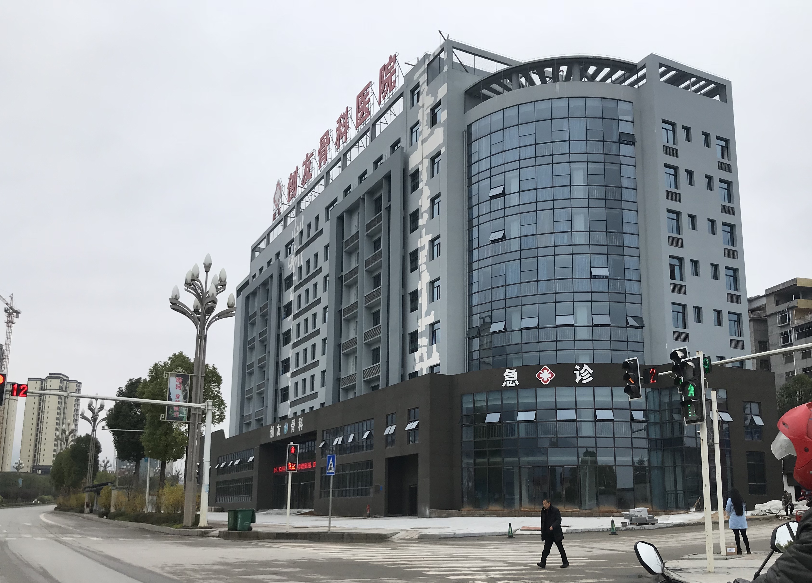

医院全景照片（待上传）黔江创友骨科医院成立于2011年6月，是经重庆市卫生健康委员会批准成立的二级骨科专科医院。十五年深耕骨科，现已发展成为渝东南地区规模最大、技术实力最强的骨科专科医院。
医院位于重庆市黔江区舟白街道武陵大道北段98号，环境优雅，交通便利。现有职工167人，其中少数民族职工114人（占比68.26%），是一支充满活力的专业医疗团队。
专业团队 · 先进设备 · 精湛技术
专业小儿骨科团队，擅长各类先天性及后天性骨关节畸形手术，帮助众多患儿恢复正常运动功能。
🏆 康复救助定点运用先进显微外科技术进行断肢再植手术，成功率高达99.8%，最大程度保留患者肢体功能。
🔥 存活率99.8%成熟关节置换技术，由经验丰富的专家主刀，术后恢复快，患者满意度高，告别关节疼痛。
引进先进手术机器人，开展机器人引导下脊柱修补术，精准定位，减少创伤，缩短恢复周期。
🤖 精准医疗采用中西医结合方法，综合治疗，为患者制定个性化康复方案，有效解决长期疼痛困扰。
现代化康复医学科，提供术后康复、运动损伤康复、慢性疼痛管理等全方位康复服务。
经验丰富的医疗团队，为您提供专业诊疗服务

院长 · 副主任医师
首席骨科专家
从事骨科临床工作三十余年，擅长髋膝关节置换、脊柱外科手术、小儿骨科矫形等，主持开展多项骨科新技术项目。
副主任医师
中医科主任
主治医师
关节外科主任
主治医师
手足外科主任
主治医师
康复医学科主任
执业医师
关节外科副主任
执业医师
中医科副主任
主治医师
康复医学科副主任
执业医师
门诊部主任
主治医师
内科主任
投资8000余万元，配备国际先进医疗设备
精准辅助手术
高分辨率成像
断层扫描诊断
全方位支持
业务用房 6678㎡ · 建筑面积 17826㎡ · 设备投资 8000余万元
用行动诠释责任，以爱心守护健康
政府认可，社会信赖
商业保险
以病人为中心，以质量求生存
责任 · 厚德 · 精业
聚专业人才，做骨科典范、塑仁爱之心，解百姓疾患
创骨科典范，友一方百姓
建成受尊重的区域性骨科医院领导品牌
客户第一、员工第二、股东第三
彼此尊重、共担共享
言行坦荡、正念利他
乐观进取、充满正能量
院歌音频/视频（待上传）
023-81580502
重庆市黔江区舟白街道武陵大道北段98号
24小时全天候服务
地址：重庆市黔江区舟白街道武陵大道北段98号